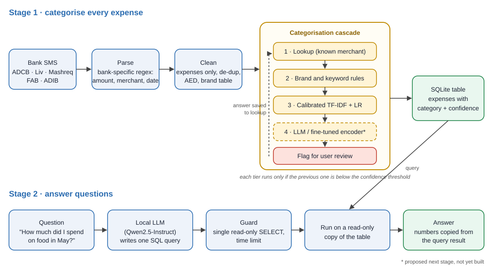

Real messages, five banks
Five people's SMS (ADCB, Liv, Mashreq, FAB; 2022–2025) for training and testing, plus Khalifa University's public ADIB dataset as an outside test the model never trains on. Names, card numbers, IBANs, OTPs and references were masked before any analysis. No raw data is published here; the dashboard shows results only, never anyone's transactions.
Categorise, then answer

Lookup
Known merchants reuse their label, including your own corrections.
Rules
Brand and keyword rules for the obvious ones: ADNOC, DEWA, "…PHARMACY".
Calibrated model
Character n-gram TF-IDF with logistic regression, calibrated on merchants it has never seen.
Ask once
Low confidence? Best guess plus a review flag. Your answer is remembered.
The honest number is the low one
Random splits reuse the same merchants in training and testing, which is why they look so good. An exact-lookup baseline scores 4.1% on brand-new merchants; the model keeps 51.2%. Brand knowledge (an LLM or fine-tuned encoder) is the next tier.
0.7–0.8 → right 95% of the time
Calibrated on unseen merchants. At a 0.60 threshold, 31% of brand-new-merchant purchases are filed automatically at 91% accuracy; the rest are asked about.
The McDonald's-at-ADNOC bug
132 restaurant purchases at petrol stations had been labelled as fuel. Fixing them lowered the new-merchant score from 53.3% to 51.2%, and the lower number is the honest one.
Questions in, SQL out, numbers from the data
Try it with your own bank export
Upload a bank SMS export or a CSV and ask questions about it. The SMS pipeline, the categoriser, the SQL database and the optional Qwen2.5-1.5B model all run inside your browser, so the file never leaves your device. No file handy? Use the synthetic sample household.
"How much did I spend on food and dining in May 2025?"
SELECT ROUND(SUM(amount_aed),2) FROM expenses WHERE user='U12' AND category='Food_Dining' AND month='2025-05'
→ 692.20 AED, read from the database, with the SQL shown.
Guard rails
A small local LLM (Qwen2.5-1.5B-Instruct) only writes one query. A guard accepts a single read-only SELECT, blocks DROP / UPDATE / PRAGMA and runs on a read-only copy with a time limit. The LLM never types a number, and messages never leave the device.
Do categorisation errors change the answers?
| 30 gold questions | Known merchants | Brand-new merchants |
|---|---|---|
| Questions without categories ("How much at Amazon?") | 100% | 100% |
| Category questions ("food in May?") | 55% (median error 5%) | 5% (median error 89%) |
One large misfiled purchase can swing a whole year's total, which is why the system asks about uncertain purchases instead of guessing quietly. All 30 questions and the LLM error types are on the dashboard.
Your money, your phone, your call
Privacy
Masked before analysis, local LLM, code-only repository. Designed around the UAE PDPL.
Consent
Contributors asked; their data shared with markers only on request; public dataset cited.
No invented numbers
The LLM only writes guarded SQL, and the query is shown with every answer. Advice answers showed why: next, they go through fixed analysis tools.
Over-trust
Confidence shown, review flag, and advice clearly marked as not financial advice.
Notebooks and code
| sms_transactions_pipeline.ipynb | Parsing five bank templates, cleaning, privacy tests |
| expense_categoriser_train_test.ipynb | Five test set-ups, calibration, confidence cascade |
| spending_assistant.ipynb | Text-to-SQL assistant with guard rails, error propagation |
| export_web_model.ipynb | Privacy-pruned, calibrated export of the categoriser for the browser |
| Try it with your data | Public prototype: the same pipeline and categoriser, running in the browser on your own export |
| Dashboard | All results: five test set-ups, calibration, error propagation and the 30-question text-to-SQL run |
Runs in Google Colab. Code: github.com/Danish12196/ledger-uae-banks. The SMS data stays private and is available to markers on request.